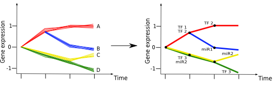

| |
MH Schulz, KV Pandit, CLL Cardenas, A Namasivayam, N Kaminsky and Z. Bar-Joseph.
Reconstructing dynamic miRNA regulated interaction networks
PNAS, August 28, 2013, doi: 10.1073/pnas.1303236110 full text
|
Supplemental Data:Predicted interactions in lung development |
This website provides the software for computing TF and miRNA dynamic networks  |
| mirDREM clusters genes by using TF-gene and miRNA-gene interactions annotations, as well as miRNA expression levels.
(left) The initial gene expression trajectories, with anticipated but unknown clusters (labeled A-D). (right) mirDREM clusters genes
that show similar gene expression trajectories and at the same time agree with input information of TF-gene and miRNA-gene interaction data.
mirDREM is based on Input-Output Hidden Markov Models similar to DREM. |
|
| Usage |
mirDREM comes with a mouse test data set and mRNA and miRNA measurements. unzip mirdrem.zip java -mx1024M -ms512M -jar mirdrem.jar or if you use windows double click on the mirdrem.cmd file Please consult the readme.txt file for more infos. |